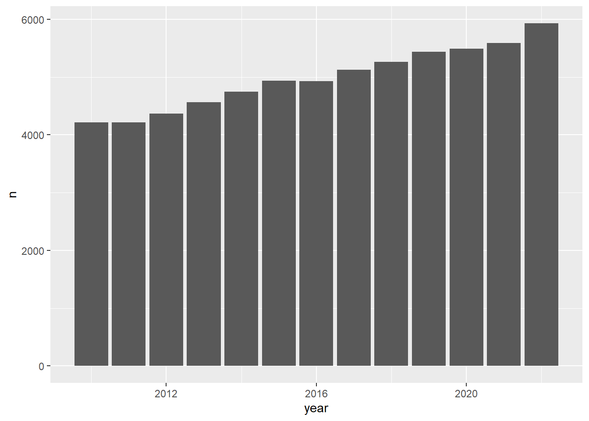

library(tidyverse) # who doesn't want to be tidy
library(networkD3) # for Sankey plots
library(ggsankey) # another sankey package
library(htmlwidgets) # html widgets helps to handle the networkD3 objects
library(htmltools) # for formatting html codeTidyTuesday: Refugees
R
TidyTuesday
R-code
Code-Along
Data-Viz
Sankey
networkD3
ggsankey
htmlwidgets
TidyTuesday 34: Looking at the United Nations High Commissioner for Refugees data with a Sankey Diagram. Diagram created with networkD3 in R.
I’m still behind on TidyTuesday, so here is TidyTuesday #34, which deals with refugee data. This data is collected by the United Nations High Commissioner for Refugees and the R package is updated twice a year.
Loading Data and Libraries
Libraries.
Loading data.
tuesdata <- tidytuesdayR::tt_load(2023, week = 34)
population <- tuesdata$populationExploratory Data Analysis
This dataset tracks the number of refugees by year. It tracks how many people request entry at each country and breaks this information down by country of origin.
head(population)# A tibble: 6 × 16
year coo_name coo coo_iso coa_name coa coa_iso refugees asylum_seekers
<dbl> <chr> <chr> <chr> <chr> <chr> <chr> <dbl> <dbl>
1 2010 Afghanistan AFG AFG Afghani… AFG AFG 0 0
2 2010 Iran (Isla… IRN IRN Afghani… AFG AFG 30 21
3 2010 Iraq IRQ IRQ Afghani… AFG AFG 6 0
4 2010 Pakistan PAK PAK Afghani… AFG AFG 6398 9
5 2010 Egypt ARE EGY Albania ALB ALB 5 0
6 2010 China CHI CHN Albania ALB ALB 6 0
# ℹ 7 more variables: returned_refugees <dbl>, idps <dbl>, returned_idps <dbl>,
# stateless <dbl>, ooc <dbl>, oip <dbl>, hst <dbl>What years have the most data?
population %>%
group_by(year) %>%
count() %>%
ggplot(aes(year, n)) +
geom_col()
I expected to see spikes corresponding to specific events, but instead, it looks like the data is gradually increasing. This upward trend might be due to better record-keeping/ data collection over the years.
I’m going to look at last year’s data.
pop_2022 <- population %>%
filter(year == 2022)A Sankey Diagram to Explore Flow
Now, I will look at where most refugees come from.
There is a technical and legal difference between refugees and asylum seekers, but I will sum them up. I also will be using refugees and asylum seekers interchangeably here.
pop_2022 <- pop_2022 %>%
mutate(total = refugees + asylum_seekers) %>%
select(coo_name, coa_name, total)I’ve been interested in learning how to make Sankey diagrams in R. A Sankey diagram shows the flow between nodes; there is a great gallery of examples here. This tidytuesday data does lend itself to a Sankey diagram. There are two nodes- country of orgin and country of arrival and the flow is the number of refugees between each pair.
I do want to highlight that the UN Refugee Agency has a separate dataset that tracks flow. The dataset we are working with is the net number of refugees. As the UNHCR webpage says:
Often the net increase or decrease in stock figures between years has been used in lieu of accurate flow figures. But these may underrepresent the true magnitude of population movements if, for example, refugee arrivals and departures balance each other out.
Still, for TidyTuesday, the net population is fine.
I’m going to pull out the top 3 sources of refugees. I’m grouping by the country of origin (coo_name) and then summing the refugees going to all countries. I then take the top 3 using dpylr’s slice_max(). Note that this function replaces top_n().
top_3_source <- pop_2022 %>%
group_by(coo_name) %>%
summarize(num_by_coo = sum(total)) %>%
slice_max(order_by = num_by_coo, n = 3)
top_3_source_names <- top_3_source$coo_name
top_3_source_names[1] "Syrian Arab Rep." "Afghanistan" "Ukraine" Now, I’m going to do a related analysis and see where the top destinations are.
top_3_dest <- pop_2022 %>%
group_by(coa_name) %>%
summarize(num_by_coa = sum(total)) %>% slice_max(order_by = num_by_coa, n = 3)
top_3_dest_names <- (top_3_dest$coa_name)
top_3_dest_names[1] "Türkiye" "Iran (Islamic Rep. of)" "Germany" Now I’m making a category “other” for both source and destination countries that aren’t in the top 3. I use the forcats function fct_other().
First country of arrival:
pop_2022$coa_name = factor(pop_2022$coa_name)
pop_2022$coa_name <- pop_2022$coa_name %>%
fct_other(keep = top_3_dest_names, other_level = "other")Then, country of origin:
pop_2022$coo_name = factor(pop_2022$coo_name)
pop_2022$coo_name <- pop_2022$coo_name %>%
fct_other(keep = top_3_source_names, other_level = "other")For now, I will remove the “other” category of country of origin.
pop_2022_no_other <- pop_2022 %>%
filter((coo_name != "other"))There are 3 popular ways to make Sankey diagrams in R: ggsankey, networkD3, and plotly. There is a nice tutorial on these methods here.
I’m going to focus on ggsankey and networkD3.
ggsankey method for Sankey Plots in R
This package is combined with ggplot to make nice static Sankey plots.
The package documentation does a great job explaining the parts of the Sankey chart. It does not do a great job of explaining what format the data should be in. I spent most of my time last Tuesday trying to figure this out.
The package includes a function make_long(), which is used to prepare the data for plotting. It labels the columns appropriately and creates the needed null/ NA entries. These entries are used to signify the end of the flow.
The UN refugee data is already long, so I spent a fair bit of time trying to figure out how to either label it myself or make it wide so I could use make_long().
It turns out that ggsankey can only be used on disaggregated data and not aggregated data such as I have here. I never found that explicitly stated in the documentation (it could be I missed that), but I only discovered it as I was trying to wrangle my data into the correct format and comparing it to the mtcars data in the example.
What do I mean by aggregated vs. disaggregated?
Let’s look at the mtcars dataframe:
mtcars2 <- mtcars %>%
slice_sample(n = 10) %>%
select(cyl, vs)
mtcars2 cyl vs
Chrysler Imperial 8 0
Camaro Z28 8 0
Merc 240D 4 1
Merc 450SLC 8 0
Datsun 710 4 1
Porsche 914-2 4 0
Duster 360 8 0
Dodge Challenger 8 0
Hornet 4 Drive 6 1
AMC Javelin 8 0This is disaggregated. It reports the properties of each car. The equivalent in our dataset would be if the database listed every refugee by name and specified where they were from and where they were going.
What the population dataset has instead is the aggregated data. This is the mtcars equivalent:
mtcars2 %>% group_by(cyl, vs) %>% count()# A tibble: 4 × 3
# Groups: cyl, vs [4]
cyl vs n
<dbl> <dbl> <int>
1 4 0 1
2 4 1 2
3 6 1 1
4 8 0 6So we know we have two cars with cyl = 4 and vs = 1, but we don’t know that they are specifically the Merc 240D and the Fiat 128.
If all you have is the aggregated data, you can’t disaggregate it. The names of the cars are not contained in that dataframe. In this case, if you absolutely had to make a Sankey diagram using ggsankey, you could write some code to make a dummy ID to represent the missing dimension. That is, you could split the entry cyl = 4 and vs = 1 into
cyl = 4 and vs = 1 and id = 1
cyl = 4 and vs = 1 and id = 2
And so on for each group.
Then you’d have to dpylr::pivot_wider() and then ggsankey::make_longer(). I wouldn’t recommend this, but it is useful sometimes to think of how you’d approach a problem, even if there are easier solutions. [This :: formatting forces the function to load from the specific library on the left side of the double colon. This is useful if you have conflicting function names in different packages; this notation assure the proper one is called. It is also useful to clarify where specific functions are coming from, even if there would be no conflict.]
networkD3 method for Sankey Plots in R
I love the R Graph Gallery when I’m looking for inspiration for TidyTuesday. R Graph Gallery recommends the networkD3 package for Sankey plots, but it is an htmlwidget. I’ve been doing a lot of interactive stuff recently, and I originally wanted to get back to some good old ggplot. But the networkD3 package does create lovely Sankey plots.
The networkD3 method seems slightly confusing because you need to transform and label the data yourself. Like ggsankey, you need information about the nodes and how they are connected with each other. One other note- this is based on a JavaScript package (with 0 indexing). So, a few “-1” to convert the index from R (which starts at 1).
There is a nice post on Sankey diagrams in networkD3 on the Data to Viz blog. The code is hidden, so you need to toggle it on with the code button if you want to see it.
The function call is (from the manual found at CRAN):
sankeyNetwork(Links, Nodes, Source, Target, Value, NodeID, NodeGroup = NodeID, LinkGroup = NULL, units = "", colourScale = JS("d3.scaleOrdinal(d3.schemeCategory20);"), fontSize = 7, fontFamily = NULL, nodeWidth = 15, nodePadding = 10, margin = NULL, height = NULL, width = NULL, iterations = 32, sinksRight = TRUE)
I need Links, Nodes, Source, Target, Value, NodeID.
Nodes is the list of countries (both origin and arrival). It needs to be a unique list of the countries stored as a dataframe.
I converted the countries to factors earlier, but that isn’t a problem.
nodes <- data.frame(name =
c(pop_2022_no_other$coo_name, pop_2022_no_other$coa_name) %>%
unique()
)Next, we need the IDs for source and target, zero-indexed. The ID is generated by position in the nodes dataframe I just created. The match() function is a base R function that returns a vector of the positions of the first argument (pop_2022_no_other$coo_name) as found in the second argument (nodes$name). Note that it returns a vector of all matches. I know that nodes is a unique list, so it is only going to return a single index. This may not be true for other use cases. Again, subtract 1 for the difference in indexing.
pop_2022_no_other$IDsource = match(pop_2022_no_other$coo_name, nodes$name) -
1
pop_2022_no_other$IDtarget = match(pop_2022_no_other$coa_name, nodes$name) -
1Next, create the color scales. Details about the options for the color scales are found in the D3 API documentation.
I am going to change the colors a bit. The other category will be gray. The colors are assigned matches using the order in the nodes df. Note that this does NOT match the order in the diagram. Most Sankey plotting programs reorder the nodes to minimize crossing and to create a cleaner diagram.
ColourScal = 'd3.scaleOrdinal([`#946943`, `#b63e36`,`#F5B041`, #909497`,`#383867`, `#584c77`, `#33431e`, `#a36629`, `#92462f`])'The colors are specified in hex code here. You can find color pickers that give you the codes on the web, such as this one.
Now I can make the diagram. I’m also specifying height and width so I can add a title and a caption using htmlwidgets. If you don’t specify height and width the figure might be truncated when the titles are applied. (This method might work for leaflet maps also. The leaflet package also lacks a method for titles.) I am using the html header 2 styling (h2) for the title, while the caption is just a normal paragraph (p).
The sinksRight parameter is used to put the label either outside the flows (FALSE) as I have done here. TRUE puts it inside the flow lines. Unfortunately, there is not a matching sinksLeft, so those labels will always be inside the flow.
# Make the Network
sankey <- sankeyNetwork(
Links = pop_2022_no_other,
Nodes = nodes,
Source = "IDsource",
Target = "IDtarget",
Value = "total",
NodeID = "name",
sinksRight = FALSE,
colourScale = ColourScal,
nodeWidth = 40,
fontSize = 13,
nodePadding = 20,
width = 600,
height = 400
)Links is a tbl_df. Converting to a plain data frame.sankey <-
htmlwidgets::prependContent(sankey, htmltools::tags$h2("Refugee Flow in 2022"))
sankey <-
htmlwidgets::appendContent(sankey, htmltools::tags$p("from UNHCR’s refugees R package"))
sankeyRefugee Flow in 2022
from UNHCR’s refugees R package
So this is pretty clear. Because the other category is disaggregated, we get individual lines for each country of arrival (but we don’t know what countries they are.) If you mouse over the traces, you can see how many refugees are involved in each path. For example, if you mouse over the large gray band on the Afghanistan to other, you see 1.8 million refugees have gone to a single color. Some of the other lines represent only a handful of refugees. I could also aggregate the other data, creating a single band from each source to other. But I think it is neat the way it is.
Saving an htmlwidget object
Saving the interactive figures to a thumbnail is always tricky. Various methods are suggested- using webshot seems to be the most popular, but I haven’t had it work. (First, you save the diagram as an HTML file, and then webshot converts that to a static image). While the HTML saves fine, the webshotted png is the title and the caption with a vast white block of no figure in between. The only consistent way I’ve found is to export from RStudio’s viewer. You do have to fiddle with the height and width of your object; otherwise, the exported file will either be truncated or have non-functional scroll bars in the image.
Citation
BibTeX citation:
@online{e. sinks2023,
author = {E. Sinks, Louise},
title = {TidyTuesday: {Refugees}},
date = {2023-08-28},
url = {https://lsinks.github.io/posts/2023-08-28-tidytuesday-Refugees/},
langid = {en}
}
For attribution, please cite this work as:
E. Sinks, Louise. 2023. “TidyTuesday: Refugees.” August 28,
2023. https://lsinks.github.io/posts/2023-08-28-tidytuesday-Refugees/.